2. ¿Cómo agregar la biblioteca de clases a un proyecto?
2.3. Guía para crear un proyecto con ClaseImagenes.dll
2.3.2. Añadidos a la aplicación básica
2.3.4. Trabajar desde otros formularios
Las vías de adquisición son varias. Usted puede encontrarla en forma de clase (con código fuente), descargando la aplicación Apolo (disponible en git/github y en sourceforge), o bien adquiriendo la biblioteca. A continuación se muestran las diferentes vías para adquirirla:
Una vez ha adquirido la clase y quiere empezar a utilizarla, abra su IDE (Visual Studio o Mono) y agréguela. En el ejemplo siguiente se va a desarrollar todo el proceso con Visual Studio 2012 Express.
Primeramente, se abre VS Express y se selecciona nuevo proyecto (Archivo/Nuevo proyecto), en este caso un proyecto Windows Forms, y tras darle un nombre (ProyectoUsoClaseImagenes) se acepta.

Ilustración 1. Selección de proyecto Windows Forms.
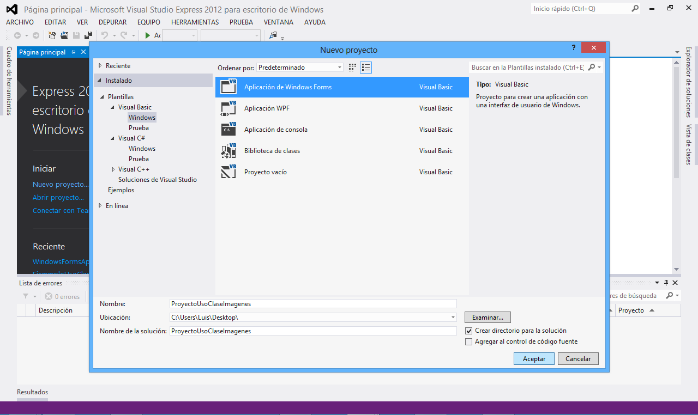

Tras unos segundos tendrá el formulario principal de su proyecto. Ya sólo queda el último paso, agregar la biblioteca ClaseImagenes.dll. Lo único que tiene que hacer es, en el explorador de soluciones (Ver/Explorador de soluciones), pulsar encima del proyecto con el botón derecho y seleccionar agregar referencia, tal y como se muestra en la siguiente imagen.

Ilustración 2. Agregar referencia.
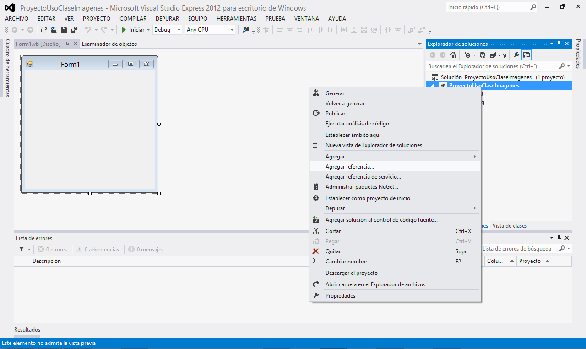

Una vez realizado esto, se mostrará un cuadro de diálogo donde se pueden agregar las diferentes referencias al proyecto. Se selecciona la opción Examinar y busque en su pc ClaseImagenes.dll.

Ilustración 3. Cuadro de diálogo agregar referencias.
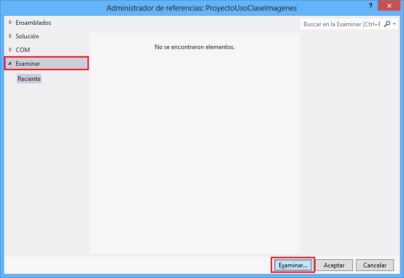

Una vez importa la biblioteca de clases se debe pulsar en aceptar y su proyecto ya está listo para empezar a utilizar la biblioteca de clases ClaseImagenes.dll.
En el anterior paso se ha agregado la referencia a la biblioteca de clases en un proyecto Windows Forms. Ahora sólo queda incluir en la cabecera del código la sentencia Imports para hacer referencia a las funciones sin necesidad de poner el espacio de nombres. Haga doble clic en una zona vacía del formulario principal y una vez se haya mostrado el código, tiene que escribir en la parte superior lo siguiente:
Imports ClaseImagenes.Apolo
En la imagen se observa el proceso.

Ilustración 4. Sentencia Imports.
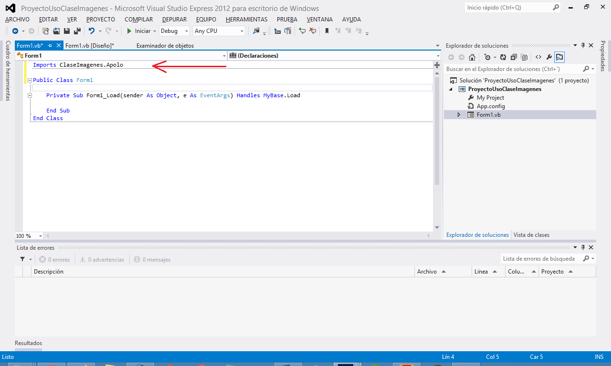

Una vez realizado esto, se va a mostrar un pequeño ejemplo de cómo transformar una imagen a tonos sepia utilizando la función Sepia de la biblioteca de clases. Para ello, diríjase a la parte de diseño de su formulario y agregue dos Picturebox arrastrándolos directamente desde el Cuadro de herramientas (Ver/Cuadro de herramientas) y un botón. A uno de los dos Picturebox se le deberá añadir una imagen desde las propiedades del Picturebox (Ver/Ventana de Propiedades), y en la propiedad Image importando una imagen desde su pc.

Ilustración 5. Importar imagen a Picturebox.
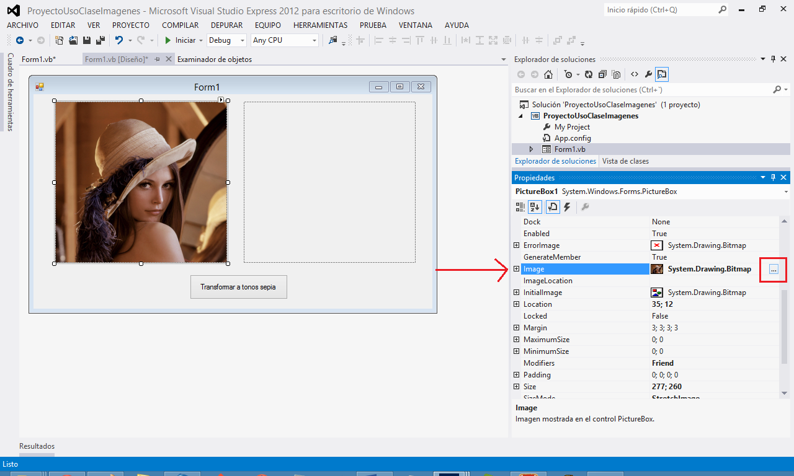

Una vez se ha importado la imagen se va a proceder a utilizar el evento clic del botón. Para hacer uso de él, se debe hacer doble clic sobre el botón (en la imagen anterior el botón se llama Transformar a tonos sepia) y se mostrará de nuevo el código fuente, en este caso asociado al clic del botón. Ahora, lo siguiente es crear un objeto de la clase Tratamiento y utilizar la función Sepia. Antes que nada, indicar que el formato de imágenes que soporta la clase en casi todas las funciones es bitmap, por lo que hay que transformar la imagen a bitmap. El código sería el siguiente:
Private Sub Button1_Click(sender As Object, e As EventArgs) Handles Button1.Click
'Transformamos la imagen a Bitmap
Dim ImagenBMP As New Bitmap(PictureBox1.Image)
'Instanciamos a la clase
Dim objetoImagenes As New TratamientoImagenes
'Asignamos al otro Picturebox el resultado de transformar a tonos sepia
PictureBox2.Image = objetoImagenes.sepia(ImagenBMP)
End Sub
Una vez realizado esto, se pulsa en Iniciar (F5) y se después de compilar abrirá el formulario.

Ilustración 6. Iniciar compilación.
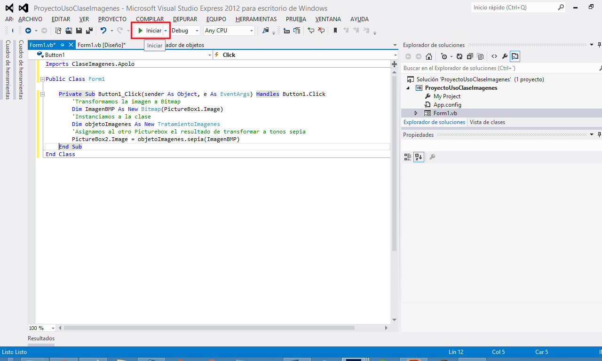

El resultado es el formulario con la imagen, y tras pulsar el botón se mostrará en el Picturebox de la derecha la imagen transformada a tonos sepia.

Ilustración 7. Proyecto compilado.
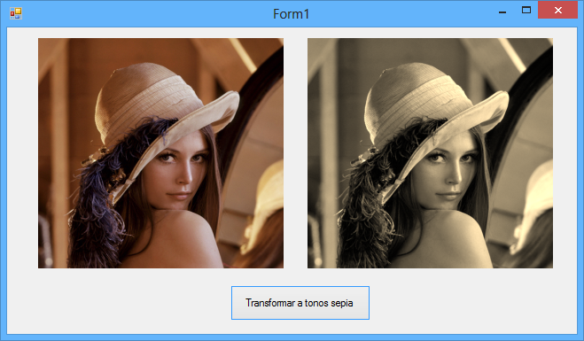

Como puede observarse el proceso es muy sencillo, simplemente hay que transformar la imagen a bitmap, crear un nuevo objeto de la clase (instanciar clase) y llamar a la función que devolverá la imagen transformada. Tenga en cuenta que, si no se hace al principio del proyecto el Imports, el código para crear el objeto sería así:
'Instancia a la clase sin sentencia Imports
Dim objetoImagenes As New ClaseImagenes.Apolo.TratamientoImagenes
Para ver cómo funcionan las diferentes funciones, propiedades, eventos, etc., de la biblioteca ClaseImagenes puede revisar la documentación técnica (disponible en la aplicación Apolo) o bien utilizar el examinador de objetos de Visual Studio.
Para utilizar esta última forma, simplemente y tras agregar la biblioteca a su proyecto, vaya al menú Ver y pulse la opción Examinador de objetos, y se mostrará todas las funcionalidades de las clases, con ejemplos, explicación de parámetros y comentarios. Y de esta forma podrá ver todos los miembros de la clase y su funcionalidad. En la siguiente imagen se muestra lo explicado.

Ilustración 8. Examinador de objetos.
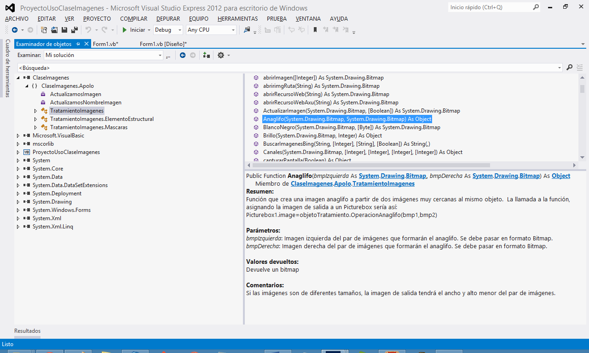

Además, como toda la biblioteca está documentada de acuerdo al procedimiento de Visual Studio y sus comentarios xml, al llamar a cualquier miembro de la clase o a sus parámetros, se muestra toda la información en IntelliSense de Visual Studio.

Ilustración 9. IntelliSense mostrando información de la función y parámetros.


En este apartado se intentará iniciar a crear una pequeña aplicación para ver el funcionamiento básico de cómo crear un proyecto valiéndose de las funcionalidades de la biblioteca de clases desarrollada.
En primer lugar, se mostrará una imagen del resultado final de la aplicación que se va a desarrollar en esta breve guía.

Ilustración 10. Programa de prueba.
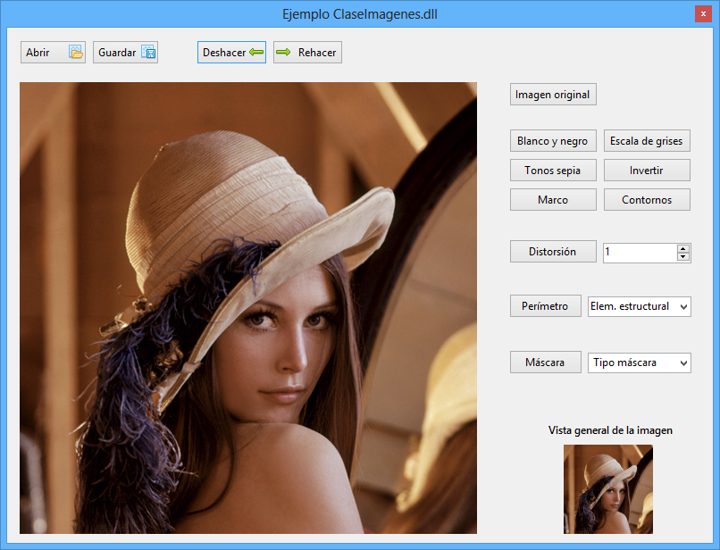

Como puede observarse el programa tiene varios botones para aplicar diferentes transformaciones, además de una imagen general (en la parte inferior derecha) y opciones para hacer/deshacer las diferentes transformaciones y abrir/guardar imágenes.
Una vez creado el formulario con los botones, se va a empezar a mostrar el código fuente. Como se había indicado anteriormente, en primer lugar se debe agregar la biblioteca dll, y después hacer la sentencia Imports.
Imports ClaseImagenes.Apolo
El siguiente paso será crear un objeto para poder gestionar todos los miembros de la clase.
'Se declara un objeto que se utilizará en todo el programa
Dim objetoTratamiento As New TratamientoImagenes
Ahora se va a mostrar el código fuente de los diferentes botones.
'BOTÓN ABRIR IMAGEN
Private Sub Button4_Click(sender As Object, e As EventArgs) Handles Button4.Click
'Asignamos a una bitmap el resultado de la imagen abierta
Dim bmpAbierto As Bitmap = objetoTratamiento.abrirImagen()
'Si se ha seleccionado una imagen (no está vacío), se asigna al Picturebox
If bmpAbierto IsNot Nothing Then
PictureBox1.Image = bmpAbierto
End If
End Sub
'BOTÓN GUARDAR IMAGEN
Private Sub Button5_Click(sender As Object, e As EventArgs) Handles Button5.Click
'Mostramos cuadro de diálogo para guardar
objetoTratamiento.guardarcomo(PictureBox1.Image, 4)
End Sub
'BOTÓN IMAGEN ATRÁS (DESHACER)
Private Sub Button1_Click(sender As Object, e As EventArgs) Handles Button1.Click
'Se selecciona la imagen anterior
PictureBox1.Image = objetoTratamiento.ListadoImagenesAtras
End Sub
'BOTÓN IMAGEN ADELANTE (REHACER)
Private Sub Button2_Click(sender As Object, e As EventArgs) Handles Button2.Click
'Se selecciona la imagen siguiente
PictureBox1.Image = objetoTratamiento.ListadoImagenesAdelante
End Sub
'BOTÓN DE IMAGEN ORIGINAL
Private Sub Button3_Click(sender As Object, e As EventArgs) Handles Button3.Click
'Carga la última imagen abierta como original
PictureBox1.Image = objetoTratamiento.ImagenOriginalGuardada
End Sub
'BOTÓN BLANCO Y NEGRO
Private Sub Button6_Click(sender As Object, e As EventArgs) Handles Button6.Click
'Creamos un bitmap con la imagen actual
Dim bmp As New Bitmap(PictureBox1.Image)
'Transformamos la imagen a blanco y negro (umbral 128)
PictureBox1.Image = objetoTratamiento.BlancoNegro(bmp, 128)
End Sub
'BOTÓN ESCALA DE GRISES
Private Sub Button7_Click(sender As Object, e As EventArgs) Handles Button7.Click
'Creamos un bitmap con la imagen actual
Dim bmp As New Bitmap(PictureBox1.Image)
'Transformamos la imagen a escala de grises
PictureBox1.Image = objetoTratamiento.EscalaGrises(bmp)
End Sub
'BOTÓN A TONOS SEPIA
Private Sub Button8_Click(sender As Object, e As EventArgs) Handles Button8.Click
'Creamos un bitmap con la imagen actual
Dim bmp As New Bitmap(PictureBox1.Image)
'Transformamos la imagen a tonos sepia
PictureBox1.Image = objetoTratamiento.sepia(bmp)
End Sub
'BOTÓN INVERTIR COLORES
Private Sub Button10_Click(sender As Object, e As EventArgs) Handles Button10.Click
'Creamos un bitmap con la imagen actual
Dim bmp As New Bitmap(PictureBox1.Image)
'Invertimos los colores de la imagen (para los tres canales RGB)
PictureBox1.Image = objetoTratamiento.Invertir(bmp, True, True, True)
End Sub
'BOTÓN APLICAR MARCO
Private Sub Button9_Click(sender As Object, e As EventArgs) Handles Button9.Click
'Creamos un bitmap con la imagen actual
Dim bmp As New Bitmap(PictureBox1.Image)
'Se envuelve la imagen en un marco (el número 3)
PictureBox1.Image = objetoTratamiento.marco(bmp, 2)
End Sub
'BOTÓN DETECTAR CONTORNOS
Private Sub Button14_Click(sender As Object, e As EventArgs) Handles Button14.Click
'Creamos un bitmap con la imagen actual
Dim bmp As New Bitmap(PictureBox1.Image)
'Se calculan los contornos
PictureBox1.Image = objetoTratamiento.contornos(bmp, 15, 100, 100, 100)
End Sub
'BOTÓN DE DISTORSIÓN
Private Sub Button13_Click(sender As Object, e As EventArgs) Handles Button13.Click
'Creamos un bitmap con la imagen actual
Dim bmp As New Bitmap(PictureBox1.Image)
'Se calculan los contornos
PictureBox1.Image = objetoTratamiento.Distorsion(bmp, NumericUpDown1.Value)
End Sub
'BOTÓN PERÍMETRO (OPERACIÓN MOROFOLÓGICA)
Private Sub Button11_Click(sender As Object, e As EventArgs) Handles Button11.Click
'Creamos un bitmap con la imagen actual
Dim bmp As New Bitmap(PictureBox1.Image)
'Creamos un objeto que contiene elementos estructurales predefinidos
Dim objetoEstructura As New TratamientoImagenes.ElementoEstructural
'Se crea una matriz de dos dimensiones que alojará el elemento estructural y le damos un valor inicial
Dim ElemenEstructural(,) As Integer = objetoEstructura.Cuadrado3x3
Select Case ComboBox1.SelectedItem
Case "Cuadrado 3x3"
ElemenEstructural = objetoEstructura.Cuadrado3x3
Case "Cuadrado 5x5"
ElemenEstructural = objetoEstructura.Cuadrado5x5
Case "Diamante 5x5"
ElemenEstructural = objetoEstructura.Diamante5x5
End Select
'Transformamos el bitmap calculando el perímetro mediante una operación morfológica
PictureBox1.Image = objetoTratamiento.MorfologicasPerimetroDilatOrigin(bmp, ElemenEstructural)
End Sub
'BOTÓN MÁSCARAS
Private Sub Button12_Click(sender As Object, e As EventArgs) Handles Button12.Click
'Creamos un bitmap con la imagen actual
Dim bmp As New Bitmap(PictureBox1.Image)
'Creamos un objeto que contiene elementos estructurales predefinidos
Dim objetoMascara As New TratamientoImagenes.Mascaras
'Se crea una matriz de dos dimensiones que alojará la máscara y le damos un valor inicial
Dim Mascara(,) As Double = objetoMascara.LineasVerticales
Select Case ComboBox2.SelectedItem
Case "Líneas verticales"
Mascara = objetoMascara.LineasVerticales
Case "Repujado"
Mascara = objetoMascara.Repujado
Case "Laplaciana"
Mascara = objetoMascara.Laplaciana1
End Select
'Transformamos el bitmap operando a través de una máscara
PictureBox1.Image = objetoTratamiento.mascara3x3RGB(bmp, Mascara)
End Sub
Se puede observar, que el código es muy sencillo, simplemente (para las transformaciones) se define el bitmap que se enviará a la clase y si los parámetros si los hubiese. Con respecto a las opciones de hacer/deshacer la sentencia es muy simple y es la propia clase quien gestiona todo.
Un último detalle para poder gestionar el evento de la imagen de detalle que está en la parte inferior, primeramente se debe incluir al manejador en el load del formulario.
'INICIO DE FORMULARIO
Private Sub Form1_Load(sender As Object, e As EventArgs) Handles MyBase.Load
'Asignamos el gestor que controle cuando sale imagen
AddHandler objetoTratamiento.actualizaBMP, New ActualizamosImagen(AddressOf actualizarPicture)
End Sub
Una vez creado el manejador, se incluye un procedimiento que recibirá un parámetro como bitmap y se asignará al Picturebox2, y así cuando se modifique (mediante la biblioteca ClaseImagenes) un bitmap enviado, se mostrará también el cambio en el Picturebox2.
Sub actualizarPicture(ByVal bmp As Bitmap)
'Asignamos al Picturebox2 cuando se detecta una transformación de la imagen
PictureBox2.Image = bmp
End Sub
El código fuente completo de la aplicación se puede descargar en el siguiente enlace, http://sdrv.ms/17eui2G.
Ahora se va a mostrar cómo gestionar diferentes opciones para utilizar miembros que dispone la clase. Como primer paso, a la aplicación se le va a añadir un ToolTip que mostrará información de qué proceso se va a rehacer o deshacer. Este ToolTip se muestra al situar el cursor encima delos botones Deshacer o Rehacer.
Como primer paso, se va a añadir del cuadro de herramientas un ToolTip (denominado ToolTip1). El siguiente paso será utilizar el evento de entrada de cursor, asociado a los dos botones.
'GESTIONAMOS EVENTO DE ENTRADA DEL CURSO EN EL BUTTON 1 (BOTÓN DE DESHACER)
Private Sub Button1_MouseEnter(sender As Object, e As EventArgs) Handles Button1.MouseEnter
'Le damos título al tooltip
ToolTip1.ToolTipTitle = "Deshacer:"
'ASociamos al button1 (deshacer) la información de la opción deshacer
ToolTip1.SetToolTip(Button1, objetoTratamiento.ListadoInfoAtras)
End Sub
'GESTIONAMOS EVENTO DE ENTRADA DEL CURSO EN EL BUTTON 2 (BOTÓN DE REHACER)
Private Sub Button2_MouseEnter(sender As Object, e As EventArgs) Handles Button2.MouseEnter
'Le damos título al tooltip
ToolTip1.ToolTipTitle = "Rehacer:"
'ASociamos al button1 (deshacer) la información de la opción rehacer
ToolTip1.SetToolTip(Button2, objetoTratamiento.ListadoInfoAdelante)
End Sub
Ahora se va a mostrar una imagen de qué haría este código puesto anteriormente.

Ilustración 11. ToolTip en botón deshacer.
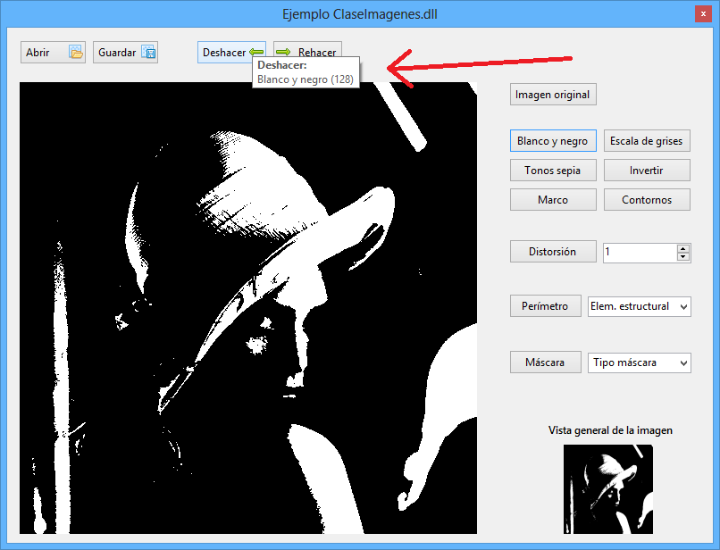

Ahora se incluirá en la parte superior del programa, en el nombre del formulario, el nombre y tamaño de la imagen que se abra. Para ello, hay que gestionar un evento similar al visto anteriormente que actualizaba la imagen general. Primeramente en el load del formulario se añade el manejador.
'INICIO DE FORMULARIO
Private Sub Form1_Load(sender As Object, e As EventArgs) Handles MyBase.Load
'Cargamos la imagen en un bitmap (la imagen se ha guardado como recurso
Dim bmpInicial As New Bitmap(My.Resources.remastered_lena_512x512)
'ASignamos al picturebox la imagen actualizándola (como imagen original)
PictureBox1.Image = objetoTratamiento.ActualizarImagen(bmpInicial, True)
'Asignamos el gestor que controle cuando sale imagen
AddHandler objetoTratamiento.actualizaBMP, New ActualizamosImagen(AddressOf actualizarPicture)
'Asignamos el gestor que controle cuando se abre una imagen nueva
AddHandler objetoTratamiento.actualizaNombreImagen, New ActualizamosNombreImagen(AddressOf actualizarNombrePicture)
End Sub
Parte del código anterior ya había sido incluido, lo que interesa realmente es la última sentencia que hará que cuando se produzca un evento, se ejecute el procedimiento actualizarNombrePicture. Como siguiente paso, se deberá crear el procedimiento con el nombre indicado anteriormente.
'Realizamos esto cuando recibimos el evento de que se ha abierto nuevo imagen
Sub actualizarNombrePicture(ByVal nombre() As String)
'Cambiamos el nombre del formulario principal, y le damos nombre, tamaño y desde dónde se ha abierto
Me.Text = "[" & nombre(0) & "] " & "(" & nombre(1) & " x " & nombre(2) & ") " & nombre(3)
End Sub
Como resultado, y tras abrir una imagen se mostrará lo siguiente en la cabecera del formulario.

Ilustración 12. Título del formulario.
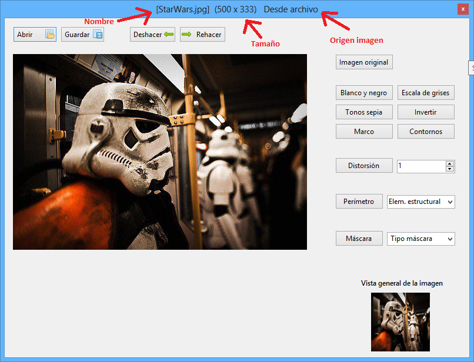

Si ha seguido este pequeño tutorial, ya tienes nociones básicas de cómo funciona la clase, pero, ¿no se ha dado cuenta de que mientras se efectúa una transformación el programa se queda congelado? Esto es debido a que leer todos los píxeles de la imagen y luego modificarlos es un proceso muy costoso. La solución es crear un hilo de ejecución aparte que se ejecutará al hacer alguna transformación. Para ejemplificar todo esto, se va a crear un proyecto de cero. Como se ha hecho hasta ahora, se abre Visual Studio y se agrega la referencia a de la biblioteca de clases, se hace el Imports y se crea un objeto de la clase para utilizarlo en todo el formulario.
Una vez hecho esto, en el formulario se va a incluir dos Picturebox uno de ellos mostrará la imagen original y otro la imagen transformada, además de dos botones. Para ver que realmente al hacer la transformación mediante un hilo el programa sigue activo y no se bloquea, se va a incluir un pequeño Picturebox donde se mostrará un gif de carga. El resultado sería algo así.

Ilustración 13. Formulario ejemplo con hilos.
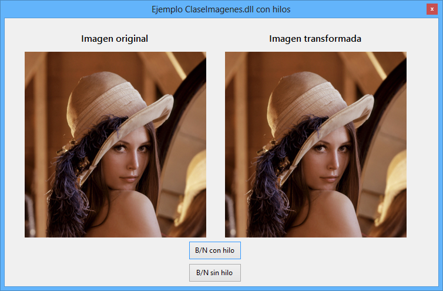

Como se observa, el Picturebox que mostrará un gif no se ve, realmente sólo se mostrará cuando se haga la transformación a B/N (blanco y negro).
Después de lo visto anteriormente, es fácil saber qué código se asociará al botón B/N sin hilo, puesto que se manejará de forma normal. El código es el siguiente.
'BOTÓN DE EJECUCIÓN NORMAL
Private Sub Button2_Click(sender As Object, e As EventArgs) Handles Button2.Click
'Primeramente, se muestra el gif que debería moverse
PictureBox3.Image = My.Resources.cargandogris
'Asignamos al Picturebox2 la imagen del Picturebox1 transformada a blanco y negro
PictureBox2.Image = objetoTratamiento.BlancoNegro(PictureBox1.Image)
'Ocultamos la imagen del gif
PictureBox3.Image = Nothing
End Sub
La única diferencia con el explicado anteriormente es que muestra un pequeño gif en el Picturebox3.
Ahora llega lo interesante, que es el botón que trabajará con hilos. Primeramente se debe arrastrar del cuadro de herramientas un control que se denomina BackgroundWorker. De este control se va a utilizar dos eventos, el evento que gestiona cuando el BackgroundWorker está funcionando (DoWork) y el que se activa justo cuando ha acabado de realizar la tarea (RunWorkerCompleted). Primeramente se muestra el código del botón.
'BOTóN DE EJECUCIÓN MEDIANTE BACKGROUNDWORKER
Private Sub Button1_Click(sender As Object, e As EventArgs) Handles Button1.Click
'Este primer condicional evalúa si el hilo de ejecución (BackgroundWorker1),
'está ocupado. Sólo se accionará si no está en funcionamiento.
If BackgroundWorker1.IsBusy = False Then
'Primeramente, se muestra el gif que debería moverse
PictureBox3.Image = My.Resources.cargandogris
'Este procedimiento activa el BackgroundWorker1 e inicia la ejecución en segundo plano
BackgroundWorker1.RunWorkerAsync()
End If
End Sub
Lo que hace el código es, primeramente evalúa que el BackgroundWorker no esté activo, y si esto es cierto, muestra el gif y llama al BackgroundWorker para que ejecute su tarea. El último paso es introducir el código de acción del BackgroundWorker y el código cuando éste finaliza la tarea.
'CÓDIGO EJECUTADO EN SEGUNDO PLANO
Private Sub BackgroundWorker1_DoWork(sender As Object, e As System.ComponentModel.DoWorkEventArgs) Handles BackgroundWorker1.DoWork
'Asignamos al Picturebox2 la imagen del Picturebox1 transformada a blanco y negro
PictureBox2.Image = objetoTratamiento.BlancoNegro(PictureBox1.Image)
End Sub
'CÓDIGO CUANDO SE ACABA LA EJECUCIÓN EN SEGUNDO PLANO
Private Sub BackgroundWorker1_RunWorkerCompleted(sender As Object, e As System.ComponentModel.RunWorkerCompletedEventArgs) Handles BackgroundWorker1.RunWorkerCompleted
'Ocultamos la imagen del gif
PictureBox3.Image = Nothing
End Sub
En resumen, los pasos son 3, primeramente desde el botón se llama al proceso principal del BackgroundWorker (DoWork), éste ejecuta el proceso y por último se ejecuta el código cuando el BackgroundWorker ha finalizado (RunWorkerCompleted).
Ahora la prueba final, se ejecuta el programa y se demuestra que el gif da vueltas cuando se ejecuta el botón que funciona con un BackgroundWorker y no da vueltas en el otro caso.
El código fuente se puede descargar desde aquí, http://sdrv.ms/17euyif.
Si usted quiere trabajar como se ha mostrado anteriormente (mediante BackgroundWorker) pero desde otros formularios que no son el principal tiene que tener unas consideraciones previas.
El caso en concreto es, por ejemplo, si tiene un formulario principal donde se muestra la imagen actual y otro Picturebox donde se muestra una imagen general (un ejemplo similar al visto anteriormente) y tiene un segundo formulario donde por ejemplo se muestra un HScrollBar para seleccionar el umbral de blanco y negro. Si en este caso quiere trabajar con hilos deberá tener unos detalles en cuenta. Los formularios serían así.

Ilustración 14. Aplicación con varios formularios.
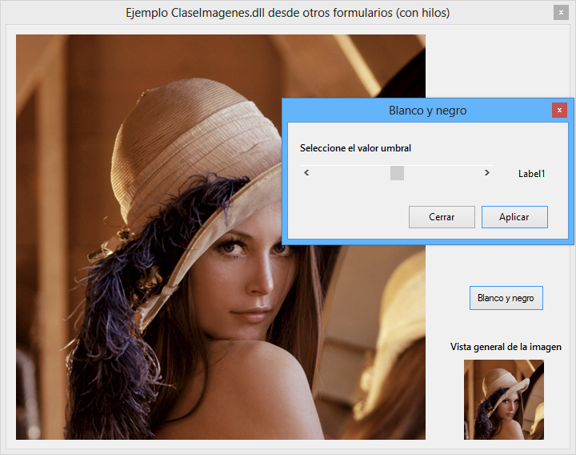

En primer lugar se va a mostrar el código del primer formulario.
Imports ClaseImagenes.Apolo
Public Class Form1
'se declara un objeto que se utilizará en toda el programa
Dim objetoTratamiento As New TratamientoImagenes
Private Sub Form1_Load(sender As Object, e As EventArgs) Handles MyBase.Load
'Asignamos el gestor que controle cuando sale imagen
AddHandler objetoTratamiento.actualizaBMP, New ActualizamosImagen(AddressOf actualizarPicture)
End Sub
'Realizamos esto cuando recibimos el evento de que se ha modificado la imagen
Sub actualizarPicture(ByVal bmp As Bitmap)
'Asignamos al Picturebox2 cuando se detecta una transformación de la imagen
PictureBox2.Image = bmp
'ASingamos al Picturebox1 cuando se detecta una transformación de la imagen
PictureBox1.Image = bmp
End Sub
'BOTÓN BLANCO Y NEGRO
Private Sub Button1_Click(sender As Object, e As EventArgs) Handles Button1.Click
'Abrimos el formulario 2
BlancoNegro.Show()
End Sub
End Class
El detalle que hay que tener en cuenta es que, en el procedimiento que gestiona el evento cargado en el load del form (el procedimiento se llama actualizarPicture), también modificamos la imagen del Picturebox1 (el principal), y esto, ¿por qué? Un poco más adelante lo veremos.
Ahora vamos con el código del segundo formulario.
Imports ClaseImagenes.Apolo
Public Class BlancoNegro
'se declara un objeto que se utilizará en toda el programa
Dim objetoTratamiento As New TratamientoImagenes
'Creamos un bitmap con la imagen del formulario principal
Dim bmp As New Bitmap(Form1.PictureBox1.Image)
Private Sub BlancoNegro_Load(sender As Object, e As EventArgs) Handles MyBase.Load
Label1.Text = HScrollBar1.Value
'Asignamos el gestor que controle cuando sale imagen (hacemos la referencia al procediento del Formulario principal)
AddHandler objetoTratamiento.actualizaBMP, New ActualizamosImagen(AddressOf Form1.actualizarPicture)
End Sub
'BOTÓN DE APLICAR
Private Sub Button1_Click(sender As Object, e As EventArgs) Handles Button1.Click
'Si el hilo (BackgroundWorker1) no está en ejecución, entonces
If BackgroundWorker1.IsBusy = False Then
'Se llama al procedimiento en segundo plano
BackgroundWorker1.RunWorkerAsync()
End If
End Sub
Private Sub BackgroundWorker1_DoWork(sender As Object, e As System.ComponentModel.DoWorkEventArgs) Handles BackgroundWorker1.DoWork
'ASingamos al Picturebox1 del formulario principal la imagen transformada
Form1.PictureBox1.Image = objetoTratamiento.BlancoNegro(bmp, HScrollBar1.Value)
End Sub
'BOTÓN DE CERRAR
Private Sub Button2_Click(sender As Object, e As EventArgs) Handles Button2.Click
'Se cierra el formulario
Me.Close()
End Sub
'EVENTO DE MODIFICACIÓN DEL SCROLL
Private Sub HScrollBar1_Scroll(sender As Object, e As ScrollEventArgs) Handles HScrollBar1.Scroll
'Se pone en el label el valor actual del Hscrollbar
Label1.Text = HScrollBar1.Value
End Sub
End Class
Como se observa en el código anterior, también estamos gestionando el evento que hace cambiar el Picturebox1 y Picturebox2 al detectar cambio, esto va en relación con lo indicado anteriormente con respecto al procedimiento actualizarPicture.
Ejecutamos el programa y funciona perfectamente, es decir, se está trabajando con hilos desde otro formulario.

Ilustración 15. Aplicación funcionando con varios formularios.
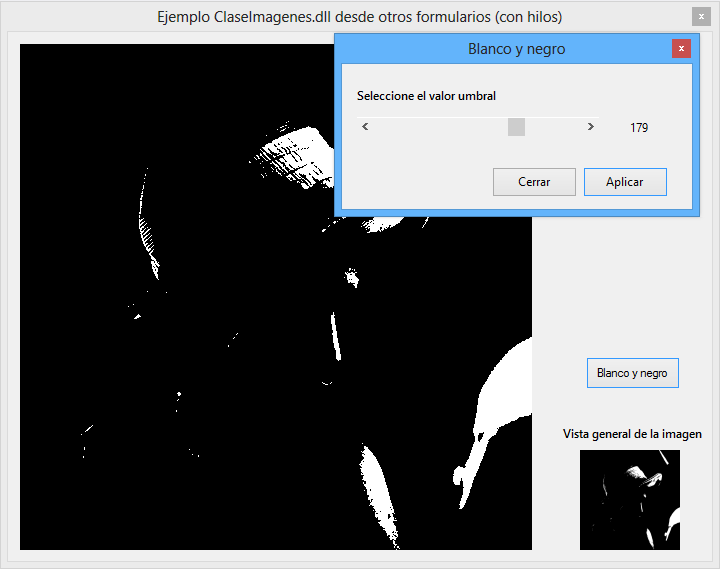

Ahora se va a ver qué pasaría si, en el procedimiento actualizarPicture se quita la sentencia que asignaba al Picturebox1 el Bitmap recibido.

Ilustración 16. Transformación fallida.
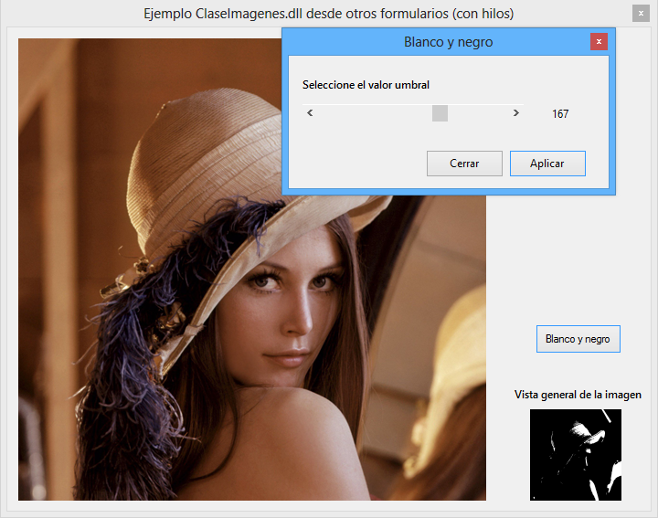

¿Qué ha pasado? Como puede verse en la imagen, se ha realizado una transformación y sólo se ha actualizado la imagen secundaria. Esto es debido a que al trabajar con hilos desde otro formulario la sentencia Form1.PictureBox1.Image = objetoTratamiento.BlancoNegro(bmp, HScrollBar1.Value) no gestiona de forma correcta la actualización del Picturebox. La solución a este problema pasa por, en primer lugar en el procedimiento (actualizarPicture) del formulario principal que gestiona el evento de transformación en la imagen incluir también al Picturebox principal (Picturebox1.image=bmp) y en segundo lugar, en todos los formularios diferentes del principal, se debe incluir en el load al manejador (AddHandler objetoTratamiento.actualizaBMP, New ActualizamosImagen(AddressOf Form1.actualizarPicture).
El código fuente se puede descargar en la siguiente dirección, http://sdrv.ms/17euTBJ.
Created with the Personal Edition of HelpNDoc: Write eBooks for the Kindle